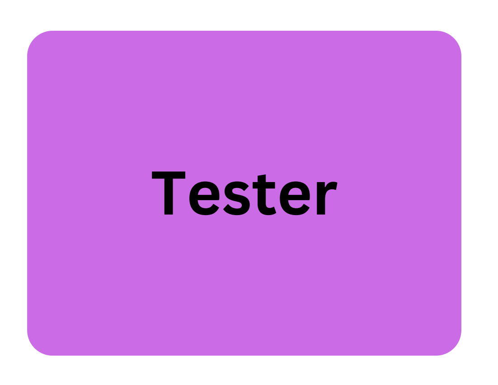

Back-end developers build and maintain the server-side logic and infrastructure of websites and applications. They focus on databases, APIs, and server-side scripting to ensure smooth data flow and functionality.

A database administrator, or DBA, is responsible for the design, implementation, maintenance, and security of an organization's databases. They ensure data integrity, performance, and availability, while also managing user access and permissions.

A data scientist is responsible for collecting, cleaning, and analyzing large datasets to extract meaningful insights. They develop predictive models and algorithms to solve business problems and communicate findings to stakeholders effectively.

A Front-End Developer is responsible for creating the visual elements of a website that users interact with directly. They collaborate with designers to implement user-friendly interfaces, optimize website performance, and ensure a seamless experience across different devices and browsers.

A Game Developer is responsible for conceiving, designing, and creating video games, overseeing the entire development process from concept to final product. They write code, develop game mechanics, and collaborate with artists and designers to bring engaging gameplay experiences to life.

An Information Security Manager is responsible for overseeing and managing an organization's information security program, ensuring the protection of sensitive data. They develop security policies, monitor security systems for vulnerabilities, and respond to incidents to safeguard the organization's information assets.

A Mobile Application Developer is responsible for designing, coding, and testing mobile applications for various platforms. They collaborate with designers and stakeholders to create user-friendly interfaces and ensure the app functions smoothly across devices.

A Network Architect is responsible for planning, designing, and implementing data communication networks that meet organizational needs. They ensure seamless and secure communication between all networked devices and manage the overall network infrastructure.

A Network Engineer is responsible for designing, implementing, and maintaining an organization's network infrastructure. They troubleshoot network issues, ensure optimal performance, and manage hardware such as routers and switches to facilitate seamless communication.

A Project Manager is responsible for planning, executing, and closing projects while ensuring they are completed on time and within budget. They lead teams, manage resources, and communicate with stakeholders to achieve project goals effectively.

A Security Expert is responsible for protecting an organization's information systems by identifying vulnerabilities and implementing security measures. They monitor networks for security breaches, respond to incidents, and ensure compliance with security policies and regulations to safeguard sensitive data.

A Software Quality Assurance Manager oversees the quality assurance process by developing testing strategies and ensuring best practices are followed. They coordinate with testing teams, track defects, and provide guidance to ensure that software products meet quality standards before release.

A Software Engineer designs, develops, and tests software applications and systems to meet user needs. They collaborate with stakeholders to gather requirements, write code, and ensure the software is efficient, reliable, and maintainable throughout its lifecycle.

A Systems Analyst examines and evaluates current systems to identify requirements and improvements. They collaborate with stakeholders to troubleshoot issues, design solutions, and ensure that systems meet user needs effectively and efficiently.

A Tech Support Staff member provides assistance to users by diagnosing and resolving hardware and software issues. They install, configure, and maintain computer systems, ensuring that technical problems are addressed efficiently to minimize downtime.

A Tester is responsible for designing and executing test cases to identify software bugs and ensure quality. They collaborate with developers to report issues and verify that the software meets specified requirements before release.

A UI/UX Designer is responsible for gathering user requirements and creating intuitive designs that enhance user experience. They develop wireframes, prototypes, and graphic elements to ensure that digital interfaces are user-friendly and visually appealing.

A Web Developer is responsible for designing, coding, and maintaining websites to ensure they are functional and user-friendly. They collaborate with designers and stakeholders to create visually appealing and efficient web applications that meet user needs and business goals.